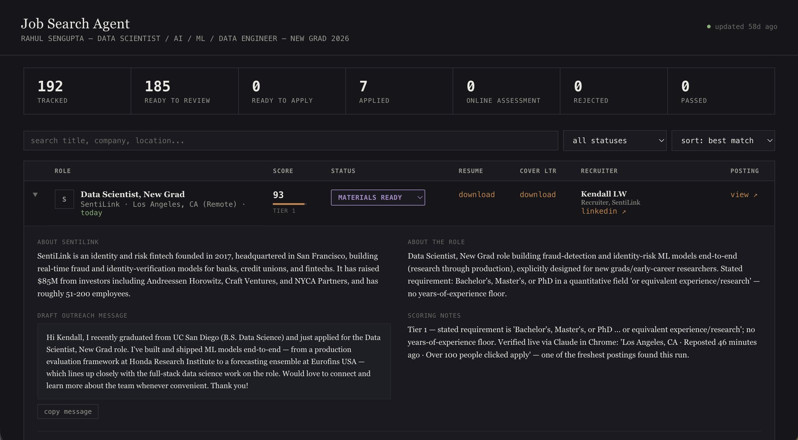

Job Search Agent
An agent pipeline that prepares applications but never sends them
An agent pipeline that does the preparation work of a job search: finding postings, proving each one is still live, tailoring a resume and cover letter to it, and drafting outreach to a named recruiter. Everything runs locally, and the last step is always a person.

One orchestrator, not a swarm
The obvious design is four agents running in parallel, and it is wrong here. Every stage depends on the one before it: a cover letter needs the job description, outreach needs the role and the company, and the tailored resume sets the framing the letter follows. All four also write the same state file, so independent agents would race on it and duplicate work.
So a single orchestrator moves through four specialist roles in sequence, spawning a focused sub-agent for a stage only when that stage benefits from a clean context, such as a resume pass that should not be distracted by search results. A pipeline is also much easier to debug than agents coordinating over messages, which matters when a scheduled run does something you did not expect and you are reading the state file afterwards to work out what.
State is written after every job rather than batched at the end, so the dashboard shows progress as it happens and an interrupted run keeps everything it had already finished.
The verification problem, which is the interesting one
A job pipeline that surfaces dead postings is worse than no pipeline, because it costs you the time it claimed to save. So every candidate link is verified before it is allowed into the state file.
The naive check is an HTTP fetch of the posting URL. That does not work, and finding out why was the most useful thing this project taught me. Some applicant tracking systems serve stale cached SEO metadata to simple fetches: a requisition that closed weeks ago still returns a full, legitimate-looking job description, title and responsibilities included. A fetch-based check passes it happily.
The only reliable signal is the rendered page. Verification opens the real URL in a browser, waits out any loading state, and requires job-specific content and a live apply action before accepting it. A redirect to a generic listings page, an error parameter appended to the URL, or a page carrying nothing but company boilerplate all mean the same thing: the requisition is gone, whatever the fetch said. Freshness is read the same way, from what the page itself renders rather than from an aggregator's claimed day count, which is frequently wrong.
Showing its work
A score is not useful if you cannot see how it was reached, so every row carries the reasoning behind it. A posting scored 93 and marked Tier 1 records why in plain terms: the stated requirement was a Bachelor's, Master's or PhD or equivalent experience, with no years-of-experience floor. The tier came from reading the actual minimum qualification rather than pattern-matching the title, which is the failure mode that fills these tools with jobs you cannot get.
The same row records the evidence from verification, quoted rather than summarised: the location, that the posting had been reposted 46 minutes earlier, and that over a hundred people had already clicked apply. That last detail is the kind of thing a summary would have thrown away, and it is exactly what tells you whether applying today is worth it.
The same principle decides what gets logged. A link that fails verification is recorded with a reason, because those are rare and usually mean something upstream changed. A posting that simply wants eight years of experience is dropped silently, because that case is constant and logging it would bury the failures that matter under noise.
A bug worth keeping in the design
Jobs were originally de-duplicated by a generated slug, which is the tidier-looking choice. Two genuinely different postings at the same company can slugify identically, and when that happened the pipeline treated the second as a duplicate and silently overwrote the first one's resume and cover letter.
De-duplication is now exact URL match only, and a file write checks for an existing name belonging to a different job before writing, appending a suffix rather than clobbering. The general lesson is the one worth keeping: a derived identifier is not an identity, and the failure mode of pretending otherwise is silent data loss rather than an error you would notice.
The human stays in the loop, deliberately
The pipeline never submits an application. It prepares materials and stops.
That is partly practical, since most applicant tracking systems want an account, custom screening answers, or a CAPTCHA, and a wrong auto-submission cannot be taken back. But it is also the right default for an agent acting on someone's behalf in a context that matters to them. If a form does need filling, it happens in a live session with a person watching, confirming before anything is sent.
A job moves through the funnel by a control on its own row, and those statuses are treated as owned by the person rather than the pipeline: once a job is marked applied, a later run will never quietly move it back.
Honest output
A run targets at least five verified postings and widens its search until it finds them, trying more keyword variants and more boards before settling. What it will not do is reach the number by relaxing verification or the matching rules. If a genuinely widened search turns up only three that survive, the run reports three and says so plainly in its finishing status.
That is the same instinct behind the rest of this page. A pipeline that quietly pads its results to hit a target is training you to stop trusting it, and a job search is already long enough without checking your own tools.
Local by construction
Nothing is hosted. A Python standard-library server serves a single-file dashboard and exposes one small write-back endpoint for the status control, the dashboard polls the state file every five seconds, and every resume, cover letter, and piece of profile data stays on the machine. There is no build step for the dashboard and nothing to install to run it.
All personalisation lives in one profile file rather than in the prompt or the code, which is what makes the pipeline reusable by someone in a different field without editing anything. That separation is also what let me de-identify the whole project into a template by swapping a single file.
Stack Claude as orchestrator with sub-agents per stage · browser automation for link verification · Python standard-library server · single-file dashboard, no build step · Node and docx for document generation · JSON as the shared state
Template My own instance runs locally against personal data; the published template is de-identified.